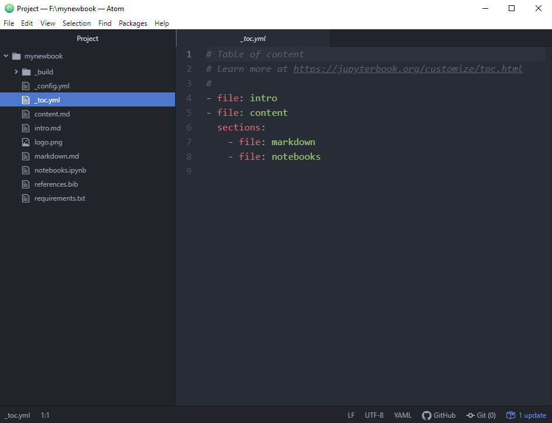
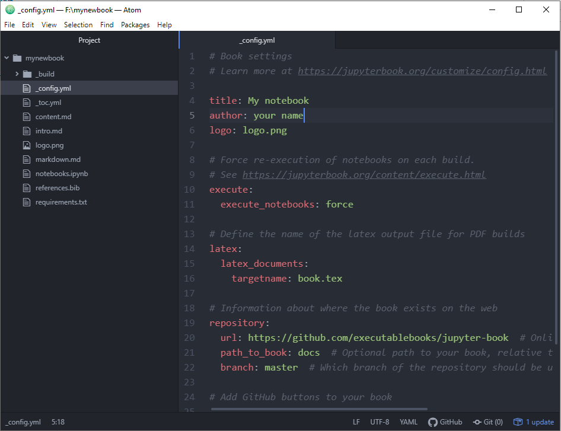
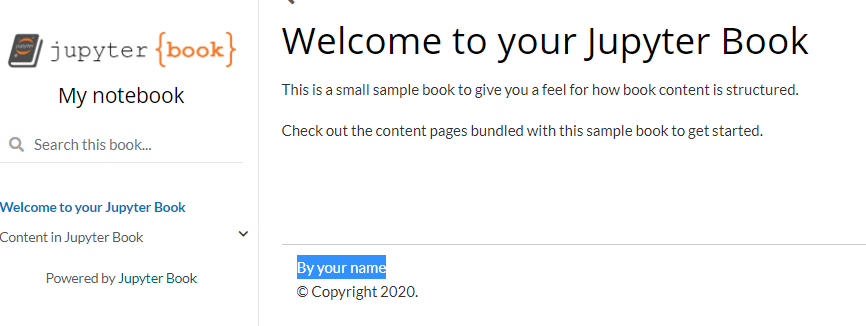
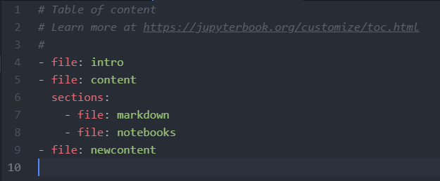
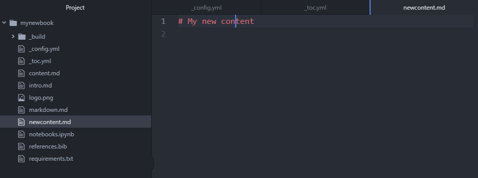
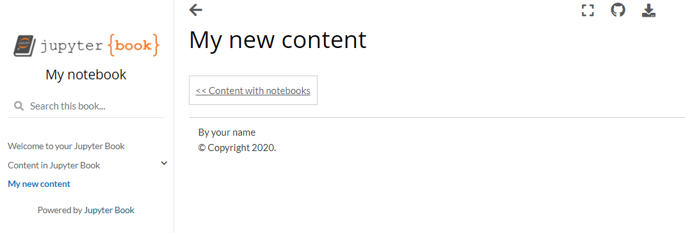

Edit the Book¶
Use a text editor to edit the files. I am using atom. Download Atom here
Open Atom and add the mynewbook folder. Figure 4

Fig. 4 The open screen of Atom¶
Once added you will be able to see the structure of the book in Figure 5.
Fig. 5 The folder structure of the book in Atom IDE¶
To change the title of the book, go to the “_config.yml” file. Change the title of the book from “My sample book” -> “My notebook”. Change the author to your name (Figure 6). Save the change. Build the book with the command from the 4th Step of Create a Book Template with Jupyter-book.
Fig. 6 Editing the _config.yml file¶
a. The result of the change (Figure 7).
Fig. 7 Result from editing the _config.yml¶
Next I will make changes to the _toc.yml. This file controls the table of content on the left side of the screen. I will add a new file and some content to the file.
a. I add a new file called newcontent as shown in Figure 8. Remember to save the change and then build the book again.Fig. 8 Editing the _toc.yml file¶
b. With Atom add a file called “newcontent.md” as shown in Figure 9. Add in the title “# My new content”.
Fig. 9 Create a newcontent.md file¶
c. Build the book. You will be able to see the change as shown in Figure 10
Fig. 10 Result of adding a newcontent.md file¶